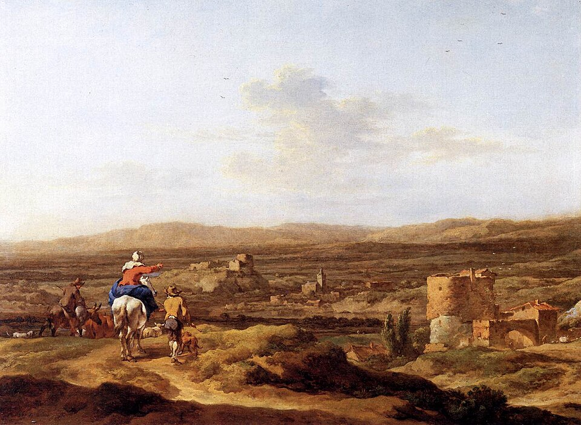

ऑपरेशन सिंदूर में पाकिस्तान को चीन के समर्थन का अमेरिकी रिपोर्ट में खुलासा
एक अमेरिकी पैनल की रिपोर्ट में खुलासा हुआ है कि चीन ने ऑपरेशन सिंदूर के दौरान पाकिस्तान का साथ क्यों दिया था। रिपोर्ट में भारत और अमेरिका के बीच रणनीतिक साझेदारी बढ़ाने की सिफारिश भी की गई है।
ताज़ा ख़बरें
सर्दियों में लंच के लिए बनाएं सेहतमंद और स्वादिष्ट आंवला रायता
विटामिन-सी और फाइबर से भरपूर आंवले का चटपटा रायता सर्दियों में दोपहर के खाने का स्वाद बढ़ाने के साथ सेहत के लिए भी बहुत फायदेमंद है।
व्यापारसर्दियों में लंच के लिए बनाएं सेहतमंद और चटपटा आंवला रायता
सर्दियों के मौसम में दोपहर के खाने का स्वाद बढ़ाने के लिए आंवले का चटपटा रायता एक बेहतरीन और स्वास्थ्यवर्धक विकल्प है। इसे विटामिन-सी और ताजे दही के साथ आसानी से तैयार किया जा सकता है।
 अंतरराष्ट्रीय
अंतरराष्ट्रीयअमेरिका के राष्ट्रपति डोनाल्ड ट्रंप बोले, ईरान के साथ समझौता स्थायी होना चाहिए
अमेरिकी राष्ट्रपति डोनाल्ड ट्रंप ने कहा है कि ईरान के साथ होने वाला कोई भी संभावित समझौता स्थायी होना चाहिए, ताकि तेहरान को परमाणु हथियार हासिल करने से रोका जा सके।
राष्ट्रीयकाव्या मारन और अनिरुद्ध के चेन्नई रिसेप्शन में पहुंचे कई वीवीआईपी, पीएम मोदी ने दी बधाई
संगीतकार अनिरुद्ध रविचंदर और बिजनेसवुमन काव्या मारन के चेन्नई रिसेप्शन में रजनीकांत और कमल हासन समेत कई दिग्गज शामिल हुए। प्रधानमंत्री नरेंद्र मोदी ने पत्र भेजकर जोड़े को बधाई दी।

अंतरराष्ट्रीयसोनिया गांधी का इटली स्थित बचपन का घर बनेगा म्यूजियम, खरीदार का एलान
वर्ष 2020 में सोनिया गांधी का इटली स्थित बचपन का घर खरीदने वाले सिख कारोबारी सुखदेव सिंह कांग ने इसे म्यूजियम में बदलने की योजना बनाई है। उन्होंने गांधी परिवार से पुरानी यादें और दस्तावेज साझा करने की अपील की है।
राष्ट्रीयभारतीय क्रिकेटर युजवेंद्र चहल भाजपा में शामिल, ओबीसी मोर्चा में मिली जिम्मेदारी
भारतीय क्रिकेटर युजवेंद्र चहल शनिवार को भारतीय जनता पार्टी में शामिल हो गए। पार्टी ने उन्हें राष्ट्रीय ओबीसी मोर्चा की कार्यकारिणी में विशेष आमंत्रित सदस्य बनाया है।
राष्ट्रीयक्रिकेटर युजवेंद्र चहल भारतीय जनता पार्टी में हुए शामिल
भारतीय क्रिकेटर युजवेंद्र चहल शनिवार को आधिकारिक तौर पर भाजपा में शामिल हो गए। पार्टी ने उन्हें राष्ट्रीय ओबीसी मोर्चा की नई कार्यकारिणी में 'स्पेशल इनवाइटी' बनाया है।
राष्ट्रीयपठानकोट कार लूट मामला: पंजाब पुलिस ने चारों आरोपियों को किया गिरफ्तार
पंजाब के पठानकोट में हाईवे के पास बंदूक की नोक पर XUV500 लूटने वाले चारों आरोपियों को पुलिस ने गिरफ्तार कर लिया है। मास्टरमाइंड को गुजरात से पकड़ा गया है और लूटी गई गाड़ी भी बरामद कर ली गई है।
खेलब्लाइंड एशिया कप: पाकिस्तानी अंपायर के विवादित जश्न पर CABI ने उठाए सवाल
क्रिकेट एसोसिएशन फॉर द ब्लाइंड इन इंडिया (CABI) ने ढाका में हुए एशिया कप फाइनल के बाद पाकिस्तानी अंपायर के एक वीडियो पर आपत्ति जताई है। वीडियो में अंपायर पाकिस्तानी खिलाड़ियों के साथ जश्न मनाते दिख रहा है।
 राष्ट्रीय
राष्ट्रीयपरिसीमन नोटबंदी से भी बड़ी आपदा साबित होगा, शशि थरूर ने दी चेतावनी
कांग्रेस नेता शशि थरूर ने परिसीमन को लेकर केंद्र सरकार पर निशाना साधा है। उन्होंने कहा कि यह नोटबंदी से भी बड़ी आपदा साबित होगी और इसके असर लंबे समय तक रहेंगे।
 राष्ट्रीय
राष्ट्रीयसुप्रीम कोर्ट का दिल्ली-एनसीआर में पटाखों पर बदलता रहा है रुख
सुप्रीम कोर्ट ने दिल्ली-एनसीआर में दिवाली पर पूरी पाबंदी के बजाय ग्रीन क्रैकर्स की अनुमति दी, लेकिन पिछले एक दशक में अदालत के रुख में कई बार बदलाव देखे गए हैं।
राष्ट्रीयचेन्नई में हुआ अनिरुद्ध रविचंदर और काव्या मारन का वेडिंग रिसेप्शन, उपराष्ट्रपति हुए शामिल
म्यूजिक कंपोजर अनिरुद्ध रविचंदर और सनराइजर्स हैदराबाद की सह-मालिक काव्या मारन का चेन्नई में वेडिंग रिसेप्शन आयोजित हुआ। इस समारोह में उपराष्ट्रपति सी.पी. राधाकृष्णन, रजनीकांत और एम.के. स्टालिन समेत कई हस्तियां शामिल हुईं।
 राष्ट्रीय
राष्ट्रीयउत्तर प्रदेश में सुधरा महिला सुरक्षा का माहौल, रात में भी लौट रहीं बेटियां: PM मोदी
प्रधानमंत्री नरेंद्र मोदी ने उत्तर प्रदेश में महिला सुरक्षा की स्थिति पर संतोष जताया है। उन्होंने कहा कि राज्य में अब बेटियां रात 11 बजे भी काम से सुरक्षित घर लौट रही हैं।
राष्ट्रीयसहारनपुर में सर्किट हाउस के दौरान एआईएमआईएम प्रमुख असदुद्दीन ओवैसी को मिला गार्ड ऑफ ऑनर
उत्तर प्रदेश के सहारनपुर में प्रोटोकॉल की चूक के कारण एआईएमआईएम प्रमुख असदुद्दीन ओवैसी को सुप्रीम कोर्ट के जज के लिए आरक्षित गार्ड ऑफ ऑनर दे दिया गया।
राष्ट्रीयउत्तर प्रदेश में बन रही है ब्रह्मोस मिसाइल, पीएम मोदी ने गिनाईं उपलब्धियां
प्रधानमंत्री नरेंद्र मोदी ने उत्तर प्रदेश में रक्षा और सेमीकंडक्टर विनिर्माण के बढ़ते दायरे की सराहना की। उन्होंने कहा कि ऑपरेशन सिंदूर में दुश्मन की नींद उड़ाने वाली ब्रह्मोस मिसाइल अब यूपी में ही तैयार हो रही है।
राष्ट्रीयपत्रकारिता से कॉकपिट तक: पायलट हना मोहसिन खान ने साझा किया सफर
आजतक मास्टरक्लास में कमर्शियल पायलट हना मोहसिन खान ने पत्रकारिता से एविएशन क्षेत्र तक पहुंचने का अपना सफर साझा किया और कॉकपिट की चुनौतियों पर बात की।
राष्ट्रीयमेरठ में दुकानदारों को सम्मोहित कर लूटने वाले ईरानी गैंग के पांच बदमाश गिरफ्तार
उत्तर प्रदेश के मेरठ पुलिस ने दुकानदारों को सम्मोहित कर लूटपाट करने वाले ईरानी गैंग के पांच बदमाशों को गिरफ्तार किया है। इनमें से चार आरोपियों पर 25-25 हजार रुपये का इनाम घोषित था।
राष्ट्रीयअमित शाह का सियांग प्रोजेक्ट पर आश्वासन, स्थानीय संस्कृति से समझौता नहीं होगा
केंद्रीय गृह मंत्री अमित शाह ने अरुणाचल प्रदेश में सियांग अपर मल्टीपर्पज प्रोजेक्ट को लेकर स्थानीय लोगों की चिंताओं पर चर्चा का भरोसा दिया है। उन्होंने कहा कि संस्कृति और धार्मिक मान्यताओं से समझौता किए बिना आगे बढ़ेंगे।
राष्ट्रीयपश्चिम एशिया संघर्ष के दौरान देश में गैस आपूर्ति नहीं होने दी बाधित: पीएम मोदी
प्रधानमंत्री नरेंद्र मोदी ने कहा कि पश्चिम एशिया संघर्ष और स्ट्रेट ऑफ हॉर्मुज से जुड़ी बाधाओं के बावजूद भारत में घरेलू गैस की आपूर्ति बिना किसी रुकावट के जारी रही।
अंतरराष्ट्रीयअमेरिका से मिली सूचना के बाद मेक्सिको में सैन्य कार्रवाई, ड्रग कार्टेल सरगना गिरफ्तार
एफबीआई के सबसे वांछित अपराधियों में शामिल और बेल्ट्रान लेयवा कार्टेल के प्रमुख नेता अल चापो को अमेरिकी खुफिया जानकारी के आधार पर मेक्सिको में एक रात चले सैन्य अभियान के बाद गिरफ्तार कर लिया गया है।
अंतरराष्ट्रीयअमेरिका और उसके सहयोगियों को और अधिक अपमान का सामना करना पड़ेगा: ईरान
ईरान के रिवोल्यूशनरी गार्ड्स (IRGC) के प्रमुख अहमद वाहिदी ने अमेरिका को चेतावनी दी है कि चल रहे सैन्य घटनाक्रम अभी शुरुआत हैं और उसके दुश्मनों को और अधिक अपमान झेलना होगा।
राष्ट्रीयमेरठ नीला ड्रम हत्याकांड: फांसी की सजा काट रही मुस्कान को सता रही बेटी की याद
मेरठ के चर्चित नीला ड्रम हत्याकांड में फांसी की सजा पाने वाली मुस्कान जेल में अपनी बड़ी बेटी से मिलने की इच्छा जता रही है। वहीं, वकीलों के पैनल ने जेल पहुंचकर दोनों दोषियों से मुलाकात की है।
राष्ट्रीयक्रिकेट में चयन प्रदर्शन के आधार पर होना चाहिए: इमरान मसूद
मोहम्मद सिराज को बाहर किए जाने को लेकर दिए गए बयान पर विवाद के बाद कांग्रेस सांसद इमरान मसूद ने सफाई दी है। उन्होंने कहा कि टीम चयन केवल प्रदर्शन के आधार पर होना चाहिए।
राष्ट्रीयसंगीतकार अनिरुद्ध रविचंदर और काव्या मारन आज चेन्नई में देंगे रिसेप्शन
म्यूजिक कंपोजर अनिरुद्ध रविचंदर और बिजनेसवुमन काव्या मारन 21 नवंबर को चेन्नई में अपने विवाह का रिसेप्शन दे रहे हैं। दोनों ने 11 नवंबर को ग्रीस में शादी की थी।
राष्ट्रीयगिरिडीह में सफाईकर्मी की मौत के बाद शव वाहन न मिलने पर कचरा गाड़ी से ले जाया गया शव
झारखंड के गिरिडीह में एक सफाईकर्मी की मौत के बाद कथित तौर पर शव वाहन उपलब्ध नहीं हुआ, जिसके बाद शव को कचरा ढोने वाले वाहन से घर ले जाया गया। स्थानीय प्रशासन और व्यवस्था पर सवाल उठे हैं।
 राष्ट्रीय
राष्ट्रीयअहमदाबाद कॉन्सर्ट से पहले दिलजीत के चार गानों पर रोक की मांग
अहमदाबाद में होने वाले दिलजीत दोसांझ के कॉन्सर्ट से पहले एक प्रोफेसर ने शराब और हिंसा को बढ़ावा देने वाले चार गाने न गाने की मांग की है। वहीं, सुरक्षा के लिए दो हजार जवान तैनात किए गए हैं।
 खेल
खेलऑस्ट्रेलिया ने पहले टी20 में इंग्लैंड को हराया, निखिल चौधरी का शानदार अर्धशतक
मेलबर्न में खेले गए पहले टी20 मैच में ऑस्ट्रेलिया ने इंग्लैंड को 3 विकेट से हरा दिया है। भारतीय मूल के खिलाड़ी निखिल चौधरी ने ऑस्ट्रेलिया की ओर से खेलते हुए शानदार अर्धशतक जड़ा।
व्यापारदिल्ली-एनसीआर में बढ़ा एयर प्यूरिफ़ायर का बाज़ार, प्रदूषण के कारण मांग में इज़ाफ़ा
दिल्ली-एनसीआर में बढ़ते वायु प्रदूषण के बीच घरों में एयर प्यूरिफ़ायर की मांग तेजी से बढ़ी है। बाज़ार में इनकी बिक्री में उछाल देखा जा रहा है और वित्त वर्ष 2030 तक इस बाज़ार के काफ़ी बढ़ने का अनुमान है।
राष्ट्रीयNEET-UG 2026 पेपर लीक मामला: सभी 14 आरोपियों ने कोर्ट में खुद को बेकसूर बताया, 25 नवंबर से ट्रायल शुरू
NEET-UG 2026 पेपर लीक मामले में राऊज एवेन्यू कोर्ट ने सभी 14 आरोपियों पर आरोप तय कर दिए हैं। आरोपियों ने खुद को बेकसूर बताया है, जिसके बाद अदालत ने 25 नवंबर से रोजाना ट्रायल शुरू करने का निर्देश दिया है।
 अंतरराष्ट्रीय
अंतरराष्ट्रीयसंयुक्त राष्ट्र में AI किलर रोबोट पर रोक के प्रस्ताव पर दो देशों की असहमति
संयुक्त राष्ट्र में स्वायत्त हथियारों और AI किलर रोबोट के इस्तेमाल पर रोक लगाने के प्रस्ताव पर चर्चा के दौरान दो देशों ने असहमति जताई, जबकि 128 देशों ने इसका समर्थन किया।
राष्ट्रीयकौन बनेगा करोड़पति 18: जलगांव के भूषण ठाकरे बने सीजन के पहले करोड़पति
लोकप्रिय क्विज शो 'कौन बनेगा करोड़पति 18' में जलगांव के भूषण ठाकरे इस सीजन के पहले एक करोड़ रुपए जीतने वाले प्रतियोगी बन गए हैं। वे अब सात करोड़ रुपए के सवाल का सामना करेंगे।
 खेल
खेलगिल और पंत ने WTC में पूरे किए 3000 रन, रचा इतिहास
शुभमन गिल और ऋषभ पंत ने न्यूजीलैंड के खिलाफ वेलिंगटन टेस्ट में वर्ल्ड टेस्ट चैंपियनशिप के तहत 3000 रन पूरे कर लिए हैं। पंत यह उपलब्धि हासिल करने वाले दुनिया के पहले विकेटकीपर बन गए हैं।
राष्ट्रीयजननायक एक्सप्रेस में सीट को लेकर विवाद, जीआरपी और यात्रियों में मारपीट
अमृतसर जा रही जननायक एक्सप्रेस में सीट को लेकर हुए विवाद में जीआरपी और यात्रियों के बीच मारपीट हो गई। पुलिस ने सरकारी काम में बाधा डालने का मामला दर्ज किया है।
 राष्ट्रीय
राष्ट्रीयराजस्थान पंचायत चुनाव में कांग्रेस का शानदार प्रदर्शन, बीजेपी को झटका
राजस्थान पंचायत चुनावों में कांग्रेस पार्टी ने मजबूत प्रदर्शन करते हुए जिला परिषद और पंचायत समिति चुनावों में बड़ी जीत हासिल की है, जिससे बीजेपी को बड़ा झटका लगा है।
राष्ट्रीयतमिलनाडु के नागरकोइल में महिला से दुष्कर्म और हत्या, छह घंटे में आरोपी गिरफ्तार
तमिलनाडु के नागरकोइल रेलवे यार्ड में एक खाली कोच से 54 वर्षीय महिला का शव बरामद हुआ। पुलिस ने त्वरित कार्रवाई करते हुए छह घंटे के भीतर आरोपी को गिरफ्तार कर लिया।
राष्ट्रीयतमिलनाडु के नागरकोइल में महिला से दुष्कर्म और हत्या, छह घंटे में आरोपी गिरफ्तार
तमिलनाडु के नागरकोइल रेलवे यार्ड में एक खाली कोच से 54 वर्षीय महिला का शव बरामद हुआ। पुलिस ने त्वरित कार्रवाई करते हुए छह घंटे के भीतर आरोपी को गिरफ्तार कर लिया है।
राष्ट्रीयसियांग घाटी मेगा बांध परियोजना: अमित शाह ने अरुणाचल के लोगों को दिया बातचीत का भरोसा
केंद्रीय गृह मंत्री अमित शाह ने अरुणाचल प्रदेश की सियांग घाटी में प्रस्तावित मेगा बांध परियोजना को लेकर स्थानीय लोगों की चिंताओं को बातचीत के जरिए दूर करने का आश्वासन दिया है।
 राष्ट्रीय
राष्ट्रीयअडाणी डिफेंस ने पोकरण में किया बघीरा AT1 मिसाइल का सफल प्रदर्शन
अडाणी डिफेंस एंड एयरोस्पेस ने राजस्थान के पोकरण में अपनी नई व्हीकल-माउंटेड एंटी-टैंक गाइडेड मिसाइल 'बघीरा AT1' का सफल प्रदर्शन किया है। इस दौरान 8 किलोमीटर दूर तक टारगेट को भेदा गया।
राष्ट्रीयNEET-UG पेपर लीक मामला: दिल्ली कोर्ट ने तीन NTA एक्सपर्ट समेत 14 आरोपियों पर तय किए आरोप
दिल्ली की एक विशेष अदालत ने NEET-UG 2026 पेपर लीक मामले में तीन NTA एक्सपर्ट्स समेत सभी 14 आरोपियों के खिलाफ औपचारिक रूप से आरोप तय कर दिए हैं। मामले की रोजाना सुनवाई 25 नवंबर से शुरू होगी।